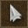
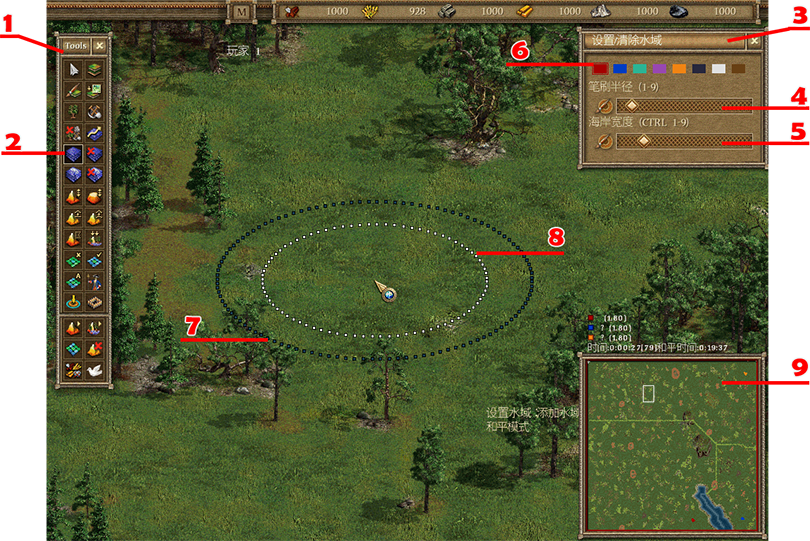

首先你因该瞭解你将要使用的地图编辑器的介面。在萤幕的左边，你会看到一个有一组按钮的工具箱栏。这上面的按钮能让你在不同的编辑模式之间转换（例如编辑水面、树木等等）。点击这个按钮可以关闭所有的编辑模式。如果所有的编辑模式都已关闭，你就可以控制士兵攻击敌人、建造建造等等。在编辑器裡就会和在游戏中一样。
在工具箱栏靠下部分的按钮可以让你在各种菜单与编辑器之间切换。
在萤幕右上方部分是一个有许多不同颜色的方块的工具选项栏，这就是显示不同编辑模式的编辑资讯的地方。

1、 左工具箱栏
2、 通过按钮突出显示确定选择了该模式
3、 右工具选项栏
4、 上捲动条（在水边编辑模式中定义水面的半径）
5、 下捲动条（在水边编辑模式中定义海岸、河岸的宽度）
6、 选择不同的国家按钮
7、 笔刷半径（表明将要改变的地形的尺寸）
8、 指示海岸的宽度（在编辑水面模式中）
9、 小地图
使用快捷键“F12”，可以打开编辑器裡的“游戏菜单”，在“游戏菜单”裡，你可以保存或者加载地图、更改游戏设定或者返回游戏主菜单。
使用快捷键“F11”，可以截取游戏画面，被截取的画面将被保存为“screenX.bmp”（“X”是截屏的号码数，如果你截屏次数增加“X”将随之增加）。